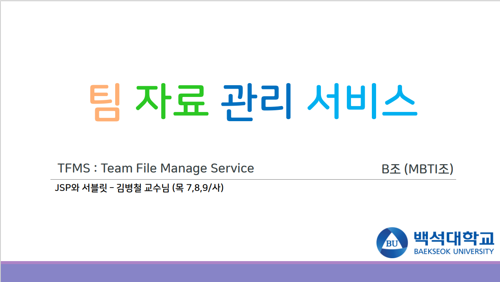

팀파일관리
떨어져 있는 팀이 서버를 통해 파일을 주고받는 서비스입니다. 관리자가 그룹을 만들고 사용자를 관리하며, 사용자는 가입 후 원하는 그룹에 참여합니다. 파일 업로드와 다운로드는 자신이 참여한 그룹 안에서만 열립니다.

화면
구현한 기능
관리자
- 그룹을 직접 만들고, DB의 활성화 값으로 그룹을 켜고 끕니다.
- 필요 없는 사용자 정보를 수정하거나 삭제하고, 활성화 값으로 계정 사용 여부를 관리합니다.
- 관리자 계정은 DB에 직접 입력해 추가합니다.
사용자
- 가입하고 로그인하면 관리자가 만든 그룹에 참여할 수 있습니다.
- 같은 그룹에 속한 멤버끼리만 파일을 올리고 내려받습니다.